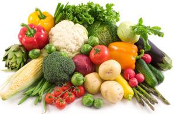

You are here: Home > Vegetables, salad and fruit
- plenty of vegetables, salad, and fruit
- a serving of Wholemeal cereals and breads, potatoes, pasta and rice at every meal - go for wholegrain varieties wherever possible
- some Milk, yogurt, and cheese
- some Meat, poultry, fish, eggs, beans and nuts
- and a very small amount or no Fats, spreads, and oils
Vegetables, salad and fruit
Fruit and vegetables provide fibre. They also provide many important vitamins and minerals and are low in calories.
How many servings should I have a day?
Choose five to seven servings a day.
What types of foods should I eat?
Fresh, local fruit and vegetables in season are best and can be very good value. Eat a variety of coloured fruit and vegetables - green, yellow, orange, red and purple in order to benefit from the variety of vitamins and minerals provided by each colour group. Include a vitamin C rich fruit each day such as orange or orange juice, strawberries or blackberries. Count fruit juice and smoothies as only one serving each day as they may low in fibre.

What is serving?
The actual portion that you eat may be bigger or smaller than the servings listed in the Food Pyramid. For example, one plum would count as ½ a serving.
One serving of fruit is
- 1 medium sized fruit - apple, orange, pear or banana
- 2 small fruits - plums, kiwis or mandarin oranges
- Small fruits - 6 strawberries, 10 grapes or 16 raspberries
- 150ml unsweetened fruit juice
One serving of vegetable is
- ½ cup cooked vegetables – fresh or frozen
- 1 bowl of salad – lettuce, tomato, cucumber
- 1 bowl of homemade vegetable soup